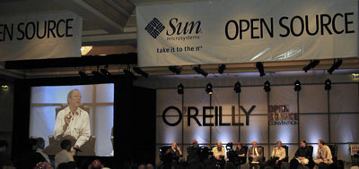

Community Articles: Opinions, Interviews, Analyses
-Louis Suárez-Potts and Zaheda Bhorat
22 August 2001
OpenOffice.org at the O'Reilly Convention
The debate between Microsoft's lead propagandist, Craig Mundie and Red Hat's CTO Michael Tiemann was the event everyone was waiting for. It was probably disappointing for most. Mundie, from many accounts, came across, as almost offensively reasonable (the word "unctuous" leaps unbidden to mind), and though he certainly did not win any popularity contest--the crowd was wearing cheap plastic red hats, to give a hint why not--all the same he failed to reveal the tell-tale marks of his demonness: you know, fangs, claws, and smoking breath.
|

|
|
Microsoft's Craig Mundie and Red Hat CTO Michael Tiemann, among others, debate in the long-awaited Sun-sponsored debate. |
But the touted debate was actually not the most interesting thing of convention. If truth be told, the center of the whole affair was the OpenOffice.org Birds of a Feather seminar which Sun organized. Yes, this claim may be a slight exaggeration, but it's not really much of one. OpenOffice.org, is, as I've long maintained, at the forefront of a new conception of Open Source, in which corporations initiate Open Source projects with the aim of creating communities of developers who will contribute to the code as well as benefit from the companies' opening of the source code of their software.
The OpenOffice.org BOF was well attended, with around thirty attendees. Max Lanfranconi and Zaheda Bhorat, of the OpenOffice.org Sun core team, carried out a poll at the beginning of the BOF and found all attendees were new to OpenOffice.org. Less than 30% of attendees were aware that the code originated from StarOffice. As a result, the general focus was to provide information about OpenOffice.org, starting with some background, including the project's history.
OpenOffice.org was also present at the Sun booth at the O'Reilly conference. During the course of the three days, we spoke to new developers and several existing member at the booth. Some of these attendees were at the O'Reilly conference last year, when OpenOffice.org was announced. Some even admitted that they were shy and lurking on the lists; we naturally encouraged them to jump in with their questions, positions, answers.
There were many questions around the Mac OS X port, and when it would be available. Don't be surprised if the Mac OS X people hear from the various interested parties following the conference! In particular, there was one group from the University of Texas wishing to contribute to this development. We also tried to connect members who wanted to build a WordPerfect filter for OpenOffice.org. In sum, we look forward to hearing about progress on the O'Reilly connections on the various mailing lists.
OpenOffice.org will also be at the upcoming Linux World Expo, to be held in San Francisco, at the Moscone Center, beginning 27 August and ending 30 August (see the OpenOffice.org homepage "Announcement" box for special details and a free pass to OpenOffice.org members). If you think that we should be present at any other Open Source meetings, please let us know by sending mail to dev@openoffice.apache.org.